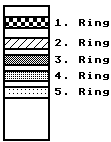

Previous
Next
TOC
Die Kennzeichnung von Kondensatoren
Kondensatoren, vor allem Kondensatoren aus Keramik, werden oft farbig
gekennzeichnet. Drei Ringe beziffern den Wert ungef‰hr so wie bei
Widerst‰nden, der vierte Ring steht fÅE die maximale Toleranzgruppe
und der Ring dahinter beziehungsweise davor gibt Auskunft ÅEer das
Temperaturverhalten beziehungsweise auch bei den Folienkondensatoren
ÅEer die zul‰ssige Betriebsspannung.
Anhand einer Kennung kann man die Herstellungsmaterialien eines
Kondensator entschlÅEseln (derzeit nicht vollst‰ndig):
C = Polycarbonat (MKC = M?KM)
T = Polyterephat (Polyester) (MKT = MKH)
U = Celluloseacetat (MKU = MKL)

ACHTUNG!
Tantalkondensatoren haben meist eine Perl-
form und eine Firmenspezifische Typenbe-
zeichnung (Farbringe). Vorsicht ist geboten
wenn der Alphanumerische Aufdruck fehlt!
Generell sind Tantalkondensatoren wie Elek-
trolytkondensatoren gepolte Bauteile und
die aufgedruckte Spannungsangabe farf nicht
ÅEerschritten werden.
1. Ring
2. und 3. Ring
Farbe
Temperaturbeiwert
Farbe
Wert
in 10-6 Grad Celsius
Rot/Violett
+100
Schwarz
0
Dunkelgrau
+33
Braun
1
Schwarz
0
Rot
2
Braun
-33
Orange
3
Dunkelrot
-47
Gelb
4
Rot
-75
GrÅE
5
Hellgrau
-110
Blau
6
Orange
-150
Violett
7
Gelb
-220
Grau
8
DunkelgrÅE
-330
Weifl
9
Blau
-470
Violett
-750
Orange/Orange
-1500
4. Ring
5. Ring
6. Ring
Toleranzwert
Betriebsspannnung
Farbe
Wert
Farbe
Wert
Farbe
Volt
Schwarz
*1p
Nichts
>10p
<10p
Rot
250V
Braun
*10p
Schwarz
+-20%
Gelb
400V
Rot
*100p
Weiss
+-10% +-1p
Blau
630V
Orange
*1n
GrÅE
+- 5% +-0.5p
Gelb
*10n
Rot
+- 2% +-0.2p
Braun
+- 1% +-0.1p
Kondensator 1 * Kondensator 2
Parallelschaltung:
Cgesamt = -----------------------------
Kondensator 1 + Kondensator 2
weiterbl‰ttern
Kapitel Die Kennzeichnung von Kondensatoren, Seite 1